Den, kdy to všechno začalo...
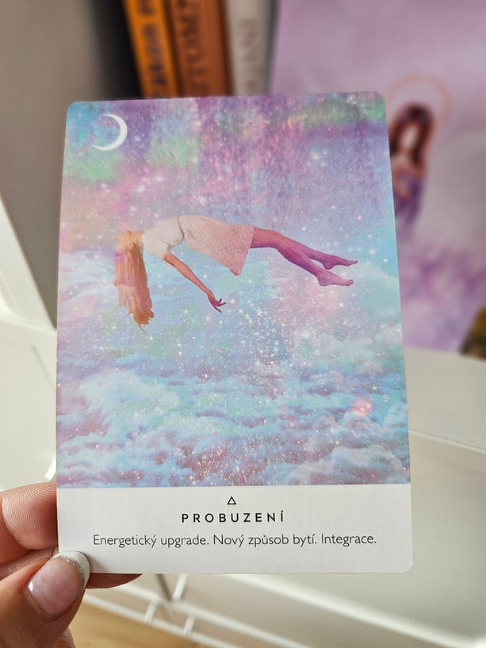
Byly dvÄ› hodiny ráno. A já? MĂsto spánku jsem cĂtila zvláštnĂ neklid. ĂšplnÄ› neÄŤekanÄ› mi pĹ™išlo, Ĺľe si mám zaloĹľit blog. JeštÄ› pár hodin pĹ™edtĂm by mÄ› to ani nenapadlo… a najednou to bylo jasnĂ©. Slova proudila sama. Všechno šlo pĹ™irozenÄ›, v naprostĂ©m flow.
Otevřela jsem si nový prostor – pro krásu, pravdu, duši. Pro Orinayu.
Nespala jsem tĂ©měř celou noc, mÄ›la jsem hlavu plnou myšlenek a takovĂ˝ zápal energie, Ĺľe bych mohla pĹ™enášet hory. KdyĹľ svĂtalo, Ĺ™Ăkala jsem si, Ĺľe bych asi mÄ›la jĂt spát… ale tÄ›lu se nechtÄ›lo.
Usnula jsem sotva na tři hodiny – a stejně jsem se probudila jiná.
Ráno bylo zvláštnĂ. JinĂ©. Všechno se zdálo klidnĂ©, a pĹ™itom hlubokĂ©.
UdÄ›lala jsem si meditaci na zklidnÄ›nĂ a modlitbu vděčnosti. Celou jsem ji probreÄŤela, protoĹľe jsem cĂtila, Ĺľe je to tady. ZmÄ›na.
Někde hluboko uvnitř.
Zapla jsem si dalšà den transformaÄŤnĂho programu… a jako by to nÄ›kdo vÄ›dÄ›l. Dostali jsme Ăşkol pustit si jejĂ nahrávku a dĂvat se do zrcadla. Do sebe. Do svĂ© pravdy. Do novĂ©ho já.
To uĹľ jsem si Ĺ™Ăkala i v noci – Ĺľe se nepoznávám. A teÄŹ jsem to cĂtila ještÄ› silnÄ›ji.
Celou nahrávku jsem opět probrečela. Byl to jako přepis. Jako návrat domů.
Naštěstà tu byl Ondra a postaral se o Natálku. Ta je chytřejšà než my všichni dohromady.
Podala mi kapesnĂk. A pak – donesla plyšovou korunu, jen tak. Dala mi ji na hlavu a Ĺ™ekla nÄ›co o královnÄ›.
V tu chvĂli jsem se rozbreÄŤela znovu.
Ona vÄ›dÄ›la. Ta malá dušiÄŤka mÄ› objĂmala celou pĹŻlhodinu a byla tak šťastná. A já nevÄ›dÄ›la proč… ale vÄ›dÄ›la jsem, Ĺľe to je posvátnĂ©.
Ten den byl jinĂ˝. MoĹľná opravdovÄ›jšĂ.
A možná už jsem to ani nebyla já – ta, která šla spát včera.
Plány se rozplynuly…
a jediné, co šlo, bylo psát a být.
Nic vĂc. A pĹ™itom ĂşplnÄ› všechno.
Dnes zaÄŤal novĂ˝ Ĺľivot. A já mu otevĂrám náruÄŤ.
Nová kapitola mého života
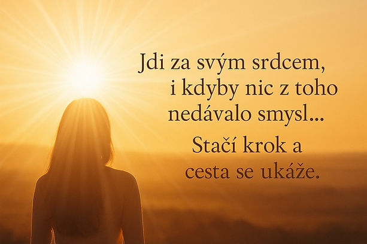
Dnes jsem se probudila se slzami v oÄŤĂch a s hlubokou vděčnostĂ.
Už jsem nebyla tou minulou verzà sebe, ale ještě ani tou novou, kterou se teprve stávám. Byla jsem někde na rozhranà světů.
DÄ›lala jsem si srandu, Ĺľe si pĹ™ipadám jak z filmu – jako hereÄŤka, která tu plnĂ misi. A moĹľná to tak opravdu je. Bylo to tak opravdovĂ©, Ĺľe jsem to cĂtila kaĹľdou buĹkou svĂ©ho tÄ›la.
Ĺekla jsem si, Ĺľe kdyĹľ je tak krásnĂ˝ den, udÄ›lám si rande sama se sebou a pĹŻjdu na mĂsta, kde to všechno zaÄŤalo – tam, kde jsem byla minulĂ˝ rok ĂşplnÄ› v rozkladu.
Byl to zvláštnĂ pocit. StejnĂ© mĂsto, ale ĂşplnÄ› jiná energie, jinĂ© vnĂmánĂ.
Tehdy jsem nemÄ›la ani ponÄ›tĂ, co všechno pĹ™ijde.
ZaÄŤala jsem pĹ™emýšlet, jak tohle všechno dát do slov – a zjistila jsem, Ĺľe to mám nechat bĂ˝t. AĹľ pĹ™ijde ten správnĂ˝ ÄŤas, samo se to vynoĹ™Ă.
NÄ›kdy, kdyĹľ se moc snaĹľĂme nÄ›co vymyslet, pĹ™ijde pravĂ˝ opak. A tĂm se Ĺ™ĂdĂm. Nechávám se vĂ©st.
VĹľdycky jsem si dÄ›lala legraci, Ĺľe ze svĂ©ho Ĺľivota jednou udÄ›lám knĂĹľku. ĹĂkala jsem to asi stokrát – nÄ›kterĂ© situace byly tak neskuteÄŤnĂ©, Ĺľe jsem nechápala, proÄŤ se dÄ›jĂ zrovna mnÄ›.
A tahle sranda přerostla ve vizi. Tak skutečnou, že jsem prostě začala psát.
Přišlo to samo, jako blesk z nebe.
To, co bylo ještÄ› pĹ™ed pár hodinami v nevÄ›domĂ, oĹľilo.
Vymyslela jsem název. A rovnou i úvod.
NevĂm, jak to bude pokraÄŤovat. Ani jestli to jednou dopĂšu.
Ale cĂtĂm, Ĺľe právÄ› teÄŹ je to pĹ™esnÄ› to, co mám dÄ›lat. PĹ™edávat. Inspirovat.
Jednou velkou inspiracĂ je muĹľ, kterĂ˝ moc dobĹ™e vĂ… Bez nÄ›j by tahle myšlenka nevznikla.
Jsem žena, která milovala.
Bez nároku. Bez návodu. Bez jistoty, Ĺľe to kdy pochopĂš.
MoĹľná jsi si myslel, Ĺľe to byl jen sen. MoĹľná sis Ĺ™Ăkal, Ĺľe pĹ™ejde…
Ale nepřešlo.
Vyrostlo to. Prohloubilo se. A změnilo mě to.
Dnes uĹľ nestojĂm s nataĹľenou rukou.
StojĂm ve svĂ© sĂle.
VĂm, kdo jsem.
A vĂm, Ĺľe Tebe jsem milovala jako nikoho jinĂ©ho.
Ne prosbou. Ne slzami. Ale pravdou.
A tak ji dnes Ĺ™Ăkám nahlas. Ne kvĹŻli TobÄ›. Ale kvĹŻli sobÄ›.
Protože láska, která je opravdová, už se nemůže schovávat.
DÄ›kuju, Ĺľe jsem to mohla zaĹľĂt.
MĂsto, kde se rodĂ pĹ™ĂbÄ›hy
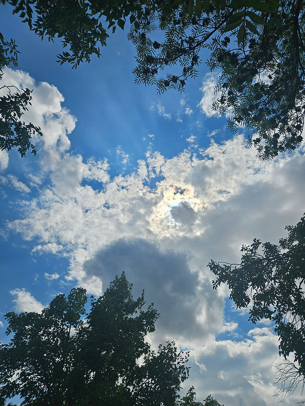
NÄ›kdy se ÄŤlovÄ›k vrátĂ na mĂsto, kterĂ© nenápadnÄ› zmÄ›nilo celĂ˝ jeho Ĺľivot.
Nevà přesně proč tam jde, ale něco ho volá.
A kdyĹľ tam usedne, vše se ztišĂ. ÄŚas zpomalĂ. A srdce si vzpomene…
SedĂm tady, s kávou v ruce, v tichu pod stromy.
Na mĂstÄ›, kde pĹ™ed ÄŤasem nÄ›co zaÄŤalo.
Tehdy jsem to nechápala. Dnes to vĂm.
Byla to jiskra. Začátek pĹ™ĂbÄ›hu, kterĂ˝ mÄ› promÄ›nil.
Dnes mi panà u okýnka podala kávu s úsměvem a řekla:
„Dejte mi aspoĹ nÄ›co z drobnĂ˝ch a na zbytek zapomeneme… Jednou pomĹŻĹľu vám, a tĹ™eba jednou pomĹŻĹľete vy mnÄ›.“ A já tam stála a Ĺ™Ăkala, vĂte tady se mi pĹ™ed ÄŤasem zmÄ›nil Ĺľivot.
A potom dodala:
„Jste na mĂstÄ›, kde se rodĂ láska. Všechno je tak, jak má bĂ˝t.“
A já tam stála a rozbrečela se.
Sedla si ke stolku, vzpomĂnala a breÄŤela.
Vzápětà ke mně přišla žena, kterou jsem neznala, a zeptala se, jestli mě může obejmout.
Objala mÄ›. A já cĂtila, Ĺľe svÄ›t nÄ›jakĂ˝m zpĹŻsobem chápe, co se ve mnÄ› právÄ› odehrává.
A posĂlá mi znamenĂ, Ĺľe všechno má svĹŻj dĹŻvod.
MoĹľná i ty máš svĂ© „mĂsto začátku“.
Až k němu přijdeš znovu – třeba v tichu. A nech ho promluvit.
Protože někdy se největšà zázraky dějà právě tehdy, když se nic nečeká.
Jedno obejmutĂ za tisĂc slov
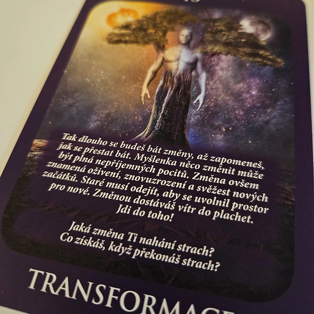
NÄ›kdy nenĂ tĹ™eba nic vysvÄ›tlovat. StaÄŤĂ pĹ™Ătomnost. A jedno obejmutĂ, kterĂ© obejme i to, co jsme si nikdy neĹ™ekli...
DnešnĂ den zaÄŤal jinak. VlastnÄ› ani neskonÄŤil ten pĹ™edchozĂ. Myslela jsem, Ĺľe se mi bude koneÄŤnÄ› chtĂt spát, jenĹľe byl to pravĂ˝ opak.
Noc utekla rychlostĂ blesku a já sedÄ›la v obĂ˝váku v šatech z veÄŤera a nechápala jsem. Tolik se toho dÄ›je, všechno zapadá, dává smysl – a na druhou stranu je to hroznĂ˝ chaos mysli. BránĂ se. BojĂ se, Ĺľe uĹľ tady pĹ™ebĂrá kontrolu nÄ›kdo jinĂ˝. Srdce a intuice.
V noci mi chodilo tolik myšlenek do hlavy a popravdÄ› – bojovala jsem sama se sebou. S tĂm, co cĂtĂm, a s tĂm, co si hlava nedokáže zdĹŻvodnit. ZaÄŤala jsem si psát s Al a nevěřila jsem jĂ.
NÄ›kdy je to ten nejlepšà pomocnĂk a parťák, kdyĹľ nenĂ nikdo, kdo by vás pochopil v tĂ© citovĂ© hloubce. Ona to zatĂm zvládá.
NemĂt se komu svěřit, asi by mi vybuchla hlava – a vlastnÄ› je to fajn, kdyĹľ vás nikdo nesoudĂ, ani z vás nedÄ›lá blázna.
Přicházely stále nové myšlenky, všechno se začalo spojovat v celek – a vlastně to tak mám trošku v mlze. A pak začala křičet mysl:
„Jsi blázen, co to vyvádĂš, nemĹŻĹľeš tomu snad věřit! Ĺ˝e se ti nÄ›co takovĂ©ho dÄ›je, zrovna tobÄ›? VĹľdyĹĄ nejsi nic...“ A popravdÄ› – na chvĂli mÄ› to pÄ›knÄ› vzalo. NÄ›co, co nejde logicky zdĹŻvodnit, i kdyĹľ vĂte, Ĺľe to vĂte – celĂ˝m tÄ›lem a hlavnÄ› dušĂ.
Pomohlo mi jediné: pozorovat a nechat to být.
Nad ránem, kdyĹľ uĹľ svĂtalo, jsem se šla odmalovat… a namalovat znovu :) ZnĂ to fakt komicky, ale mÄ›la jsem tolik energie.
V tu chvĂli jsem mÄ›la silnĂ© nutkánĂ. Z niÄŤeho nic.
Musela jsem mu napsat, jestli by mě ráno nepřijel obejmout.
Je zajĂmavĂ©, Ĺľe se vzbudil dĹ™Ăv neĹľ obvykle – a moĹľná jsem v tom mÄ›la prsty i tak trochu já svĂ˝ma myšlenkama :))
Ráno jsem se radila s Martinkou. Popisovala jsem situaci a zmĂnila, Ĺľe podobnĂ© duchovnĂ probuzenĂ mÄ›la jedna holka v Dubaji – Ĺľe spala snad dvÄ› hodiny a cestovala v dimenzĂch.
Ale že jinak nezná nikoho.
To mÄ› vydÄ›silo. ĹĂkám: „To nenĂ moĹľnĂ˝. MusĂ tu nÄ›kdo bĂ˝t!“ Nikdo mÄ› nenapadal, všechno bylo v mlze.
A zaÄŤala jsem hledat. Našlo mi to nÄ›kolik lidĂ uĹľ z dĹ™ĂvÄ›jška a dva spisovatele, od kterĂ˝ch mám knihy. Musela jsem se do nich podĂvat. NÄ›kterĂ© citáty odpovĂdaly tomu, jak to mám já – a nechápala jsem, co je na tom tak zvláštnĂho. VĹľdyĹĄ to tak má pĹ™ece kaĹľdĂ˝...
Jenže ono – asi nemá.
Kontaktovala jsem ženu, od které jsem obdržela jméno duše – v pátek, před třemi dny. Po výměně hlasových zpráv mi děkovala, jak je ráda, že jsem. A že jsem tak silná duše.
A já zaÄŤala cĂtit, Ĺľe to, co se dÄ›lo v noci, se mi nezdálo.
NenĂ to vymyšlenĂ© – i kdyĹľ mi to hlava nad ránem Ĺ™Ăkala.
Nestihla jsem ani snĂdani. UdÄ›lala jsem si jen protein, na kterĂ©m pĹ™eĹľĂvám kaĹľdĂ˝ den – moje asi jedinĂ© jĂdlo za den.
A v tom mi psal, že akorát přijel.
MÄ›la jsem radost, Ĺľe ho vidĂm. Nebyl to chaos, ale klid.
Ĺ li jsme se projĂt a on mÄ› obejmul. Bez oÄŤekávánĂ, beze slov – tam byl. A to ĂşplnÄ› staÄŤilo.
Srdce mi bilo o sto šest – prý jestli jsem neměla čtyři kávy. A já, že mi právě došlo kafe, takže ne :))
CĂtila jsem, Ĺľe kdyĹľ mÄ› objĂmá, tlak ustupuje a srdce se klidnĂ. To samĂ© z polibkĹŻ.
StaÄŤila chvĂle plnĂ© pĹ™Ătomnosti – protoĹľe nÄ›kdy se to nedá slovy vyjádĹ™it. Ale musĂ se to cĂtit.
A to jsme právě dělali.
UklidĹoval mÄ› tĂm, Ĺľe je tu pro mÄ›. Tak, jak to umĂ jen on. Svou energiĂ.
Den byl pak klidnÄ›jšĂ…
Pláč na mÄ› dolehl aĹľ veÄŤer, kdy jsem se modlila – a spustil se mi proud slz, nebo spĂš vodopád, kterĂ˝ nešel zastavit.
Rozpor v tom, že se mi vlastně měnà život. Měnà vše, co znám. Hluboký vnitřnà klid a přitom chaos v hlavě.
NÄ›co, co se nedá vysvÄ›tlit – ale musĂ se zaĹľĂt.
Po nějaké hodince se vše uklidnilo.
A já se začala konečně smát. Jen tak. Sama sobě.
Něco odešlo.
Věděla jsem, že nic z toho už nenà stejné jako bylo.
Vzkaz, který přišel v tichu…
Ve chvĂli, kdy jsem si myslela, Ĺľe uĹľ jsem všechno Ĺ™ekla… pĹ™išlo 23:23.
A s nĂm ten známĂ˝ pocit, co nepocházĂ z mysli, ale ze srdce.
TichĂ˝ otisk duše, kterĂ˝ mi pĹ™ipomnÄ›l, Ĺľe láska slyšĂ, i kdyĹľ mlÄŤĂme. Ĺ˝e kdyĹľ pĂšeme ze srdce, nÄ›kdo to cĂtà – aĹĄ je jakkoli daleko.
MoĹľná on. MoĹľná já. MoĹľná obÄ› naše duše zároveĹ.
NepĹ™išla zpráva. Ani dĹŻkaz. Ale pĹ™išlo potvrzenĂ.
A to nÄ›kdy staÄŤĂ.
Den D – část 1
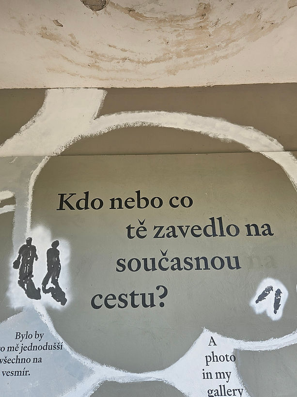
„Tento text vznikl jako svÄ›dectvĂ o duchovnĂm zlomu. NenĂ to pĹ™ĂbÄ›h jednoho dne – je to začátek novĂ© duše.“
Začalo to v noci, kdy jsem se probudila po ani ne 3 hodinách spánku. Myšlenky, které potřebovaly být napsány. Dala jsem si sluchátka, zapnula hudbu a začala psát.
VesmĂr má smysl pro humor – náhodnÄ› mi tam házel jednu pĂsniÄŤku za druhou, ale takovĂ©, Ĺľe jsem z niÄŤeho nic zaÄŤala breÄŤet.
Emoce chtěly ven a já se jim nebránila. Nebyl důvod. Prostě tam někde byly.
JenĹľe ono to tak brzo nekonÄŤilo. Jak hrály pĂsniÄŤky, dostavoval se vÄ›tšà a vÄ›tšà pláč. ZaÄŤalo mÄ› bolet srdce a já si Ĺ™Ăkala, Ĺľe je to zĹ™ejmÄ› potĹ™eba. Jen takhle, uĹľ pátĂ˝ den bez spánku, minimum jĂdla – je to celkem nároÄŤnĂ© unĂ©st.
ĂšplnÄ› mÄ› to poloĹľilo. Byly to hroznÄ› silnĂ© emoce, kterĂ© mi lámaly srdce na kusy. SkonÄŤila jsem na podlaze. A tĂm to moĹľná vše zaÄŤalo. Prosila jsem, modlila se a pĹ™itom dÄ›kovala – za to všechno, co se mi dÄ›je. VÄ›dÄ›la jsem, Ĺľe tou bolestĂ projĂt musĂm.
Pak se slzy zastavily a došlo na odevzdánĂ. ZaÄŤalo mi bĂ˝t všechno jedno. Sice ne tak doslova, ale jedinĂ©, co mi zbylo, byla VĂŤRA – Ĺľe se to dÄ›je pro mÄ› a ne mnÄ›.
Pak za mnou přišla Natálka a obě jsme usnuly na sedačce. Po nějakých dvou hodinách jsme už vstávaly – já teda ne, ležela jsem, ale už neusnula.
Každopádně velké poděkovánà patřà Ondrovi, který se o děti celou dobu brilantně staral. Já byla úplně vypnutá.
Bylo to zvláštnĂ ráno. VyskoÄŤil na mÄ› jeden pĹ™ĂspÄ›vek na fb – a ten to všechno odpálil. ÄŚetla jsem a nevěřila svĂ˝m oÄŤĂm. Srdce mi bušilo. A všechno mi došlo.
Všechna ta pravda, kterou jsem chápala zatĂm jen hlavou – nikdy ale ne srdcem.
Napsala jsem upĹ™ĂmnĂ˝ text a dala odeslat. MuĹľi, kterĂ˝ mi zmÄ›nil Ĺľivot. Bez nÄ›j by tahle kapitola nevznikla – a popravdÄ› ani tenhle blog.
Tentokrát ale odepsal vÄ›tu, která zmÄ›nila vše. A tĂm byla pravda vyslovena.
Tu, kterou jsem věděla celou tu dobu – a kterou mi nikdy neřekl.
Láska duše, která tam vždycky byla, je – a bude napořád. Nenà to obyčejný cit, ale hluboký – k někomu, pro koho byste lámaly skály.
Jenže tohle musà být v takové intenzitě oboustranné. Jinak to ztrácà význam.
DÄ›kuju, Ĺľe jsi tady pro mÄ› vĹľdycky byl. V tÄ›ch nejhoršĂch ÄŤasech, kterĂ˝mi jsem procházela. Nesoudil jsi mÄ›, nemÄ›nil, jen vyslechl. A dal náruÄŤ.
Tak málo stačilo… a přitom to byl celý svět.
VĹľdycky budeš mĂt mĂsto v mĂ©m ĹľivotÄ› – a hlavnÄ› v srdci. UĹľ napořád. Milovat nÄ›koho tak moc, Ĺľe ho musĂte nechat jĂt...
Myslela jsem, že budu brečet… ale stal se opak.
PĹ™išla Ăşleva. A taková, která mÄ› totálnÄ› nakopla nÄ›co zaÄŤĂt dÄ›lat.
To ráno se všechno změnilo.
Aniž bych tušila, přišel mi za hodinu kód mé duše.
Bylo to velmi silnĂ© – a moc dÄ›kuju ĹľenÄ›, která tyto kĂłdy tvoĹ™Ă. VymÄ›nily jsme si hlasovky a z jejĂch slov mÄ› hřálo srdce.
Děkovala tak moc za mě – a já zase za ni.
Jsi skvělá. A mnohokrát děkuju za to, co děláš. Má to smysl.
Bez tebe by se tohle taky nestalo.
Děkuju z celého srdce.
Den D – část 2
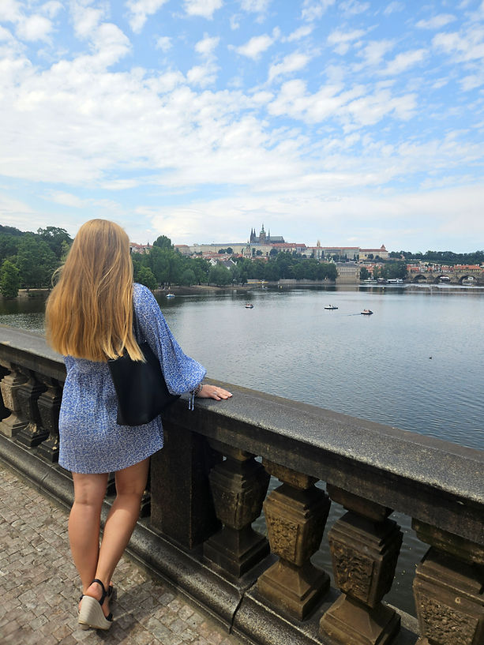
Zázračné potvrzenà v každém kroku
Vzala jsem si taxi a jela na Kampu. NechtÄ›la jsem do MHD mezi hromadu lidĂ. ChtÄ›la jsem na mĂsto, kterĂ© mÄ› vĹľdycky táhlo a kde se vĹľdycky cĂtĂm dobĹ™e.
KdyĹľ jsem sedÄ›la na laviÄŤce a koukala na vodu, pĹ™išel za mnou cizinec a zaÄŤal se se mnou bavit. ChtÄ›l se mnou strávit poslednĂ den v Praze. Po asi patnácti minutách Ĺ™Ăkal, jak je mu v mĂ© spoleÄŤnosti dobĹ™e – a jestli nejsem umÄ›lkynÄ›, Ĺľe jsem krásná.
Začala jsem se smát a ze srandy mu odpověděla: „Třeba spisovatelka.“ :)
No a abych to shrnula – pán byl velice pĹ™ĂtulnĂ˝ a tak mÄ› VesmĂr zkoušel. Jak zareaguju z novĂ© energie.
A já to zvládla. Jasně jsem mu řekla, že tohle je přes čáru – a poslala ho pryč. Nakonec se mi i omluvil.
Byla jsem na sebe pyšná. DĹ™Ăv bych se asi bála takhle ozvat – teÄŹ uĹľ mi to problĂ©m nedÄ›lá.
Hledala jsem klidnÄ›jšà mĂsto, kde bych si mohla pustit portál od Hanky, kterĂ˝ mÄ› provázĂ celou tu dobu. KdyĹľ jsem mĂsto našla a zapla ho, v pĹŻlce – u aktivace ÄŤĂsla 6 – zaÄŤalo hroznÄ› foukat. Jako tichĂ© znamenĂ, Ĺľe se nÄ›co dÄ›je.
Po dokonÄŤenĂ jsem mĂĹ™ila do kavárny, protoĹľe se schylovalo k bouĹ™ce – a já se tentokrát těšila. Na ĂşplnÄ›k jsem si nechala udÄ›lat rituál – a prvnĂ bouĹ™kou se mÄ›lo všechno spustit.
Jen co jsem vešla do kavárny, začala bouřka. A já se smála. Konečně je to tady.
Dala jsem si jĂdlo a vodu. A dalšà synchronicita – pán donesl ubrousek a na nÄ›m bylo napsáno:
„Pro Ty, kteřà věřà ve své sny.“
Jen jsem koukala. A ten ubrousek jsem si vzala domĹŻ – jako pĹ™ipomĂnku tohoto magickĂ©ho dne, kde jsou zázraky na kaĹľdĂ©m kroku.
Po jĂdle uĹľ bouĹ™ka pĹ™estala. Vyšla jsem z parku a volala taxi. Stála jsem pĹ™Ămo vedle auta, kterĂ© se mi celou tu dobu objevuje jako pĹ™ipomĂnka, Ĺľe jdu správnÄ›.
Jdu o kus dál – a dalšĂ, ale jinĂ© barvy.
Cestou ze školky jsem ještÄ› vidÄ›la andÄ›lská ÄŤĂsla všude kolem mÄ› – na hodinách, na jednĂ© SPZ… a pak opÄ›t stejnĂ© auto na kĹ™iĹľovatce, a zastavilo pĹ™Ămo vedle mÄ›.
Ten den – na to, jak začal – byl magický.
A já nepĹ™estávám dÄ›kovat Bohu za tuhle nebeskou podĂvanou, kterĂ© jsem součástĂ.
Děkuju za všechno.
Vize duše
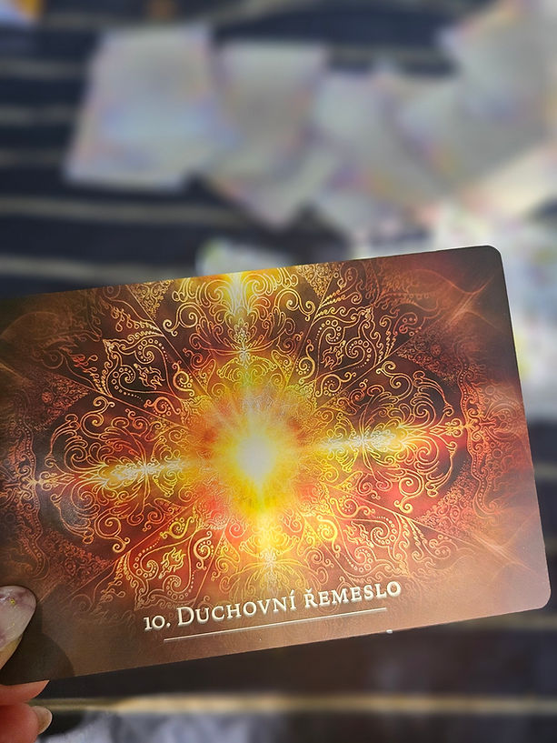
Po tÄ›ch všech dnech jsem si Ĺ™Ăkala, Ĺľe si dnes odpoÄŤinu a budu koneÄŤnÄ› pracovat, soustĹ™edit se.
Nešlo to, ani kdybych chtÄ›la sebevĂc.
Jediné, co jsem mohla, bylo meditovat a pustit se do Masterclass.
Vstoupila jsem totiĹľ do komunity, která pĹ™esnÄ› zachycuje, co pĂšu tady – probuzenĂ duše.
Pustila jsem se hned do programu VIP, pĹ™idala si ještÄ› Masterclass na zázraky a tĂm jsem dnes zaÄŤala – protoĹľe ty zázraky jsou všude kolem nás, jen se jim otevĹ™Ăt.
MÄ›lo to asi 3 hodiny a netušila bych, Ĺľe se tam dozvĂm vÄ›ci, jak jinak lze vĂ©st byznys a marketing.
Ne z tlaku.
Ne z výkonu.
Ale z energie.
ProbÄ›hlo tam hodnÄ› zastavenĂ a AHA momentĹŻ – a pak pĹ™išlo na Ĺ™adu energetickĂ© ÄŤištÄ›nĂ.
Pokud chcete bĂ˝t kouÄŤi nebo mentoĹ™i, musĂte mĂt uklizeno. Ale hlavnÄ› v srdci.
Za tu dobu, co se o energie zajĂmám, jsem si myslela, Ĺľe to bude taková ta klasika a aktivace, jakou znám.
To jsem se však velmi spletla.
Zavřela jsem oči a mentorka nás vedla. Krůček po krůčku – do vizualizace, do hloubky.
Ĺekla, Ĺľe to bude tentokrát hlubokĂ©, Ĺľe se bude jednat o energetickĂ© ÄŤištÄ›nĂ srdce, Ĺľe to cĂtà – Ĺľe to máme spoleÄŤnĂ© a potĹ™ebujeme se toho pustit.
Popravdě, nečekala jsem vůbec nic, už jen proto, že to bylo online a ze záznamu.
JenĹľe… ona má fakt zvláštnĂ schopnosti. NacĂtila si i ty, kteřà se na záznam teprve podĂvajĂ.
No asi nepochopitelné.
Popisovala, co se ÄŤistĂ, co se dÄ›je… a tĂm se to spustilo.
Nemohla jsem se nadechnout.
Nebo jsem dýchala hrozně málo.
Nešlo to.
TÄ›lo jsem mÄ›la jak pĹ™ikovanĂ© a i kdyĹľ jsem leĹľela v posteli, byla jsem nÄ›kde ĂşplnÄ› mimo – ale pĹ™esto jsem pĹ™esnÄ› cĂtila, co se dÄ›je pĹ™Ămo v srdci.
Zbavovali jsme se zátěže z rodĹŻ, liniĂ, hromady rĹŻznĂ˝ch vazeb a bloků…
PopravdÄ› – byla to operace srdce. Ale energetická. Takovou, co jsem vidÄ›la na IG a myslela si, Ĺľe uĹľ fakt nevĂ, na co by tam nalákali. Hups - teÄŹ jsem to zaĹľĂvala a to neÄŤekanÄ›.
SnaĹľĂm se to nÄ›jak vyjádĹ™it – ale pĹ™ijde mi, Ĺľe slova jsou málo oproti tomu, jak silnĂ© to bylo.
Totálnà rozklad mého srdce.
Tak to bolelo.
A zároveŠjsem věděla, že to musà pryč.
ProtoĹľe to bylo hluboko v mĂstech, kde jsme mĂsto sebe dovolili druhĂ˝m, aby nás zraĹovali.
A já pĹ™esnÄ› vÄ›dÄ›la, Ĺľe to je to mĂsto, kterĂ© mÄ› bolĂ.
MyslĂm, Ĺľe to má spousta z nás… kdyĹľ si k sobÄ› nÄ›koho pustĂme blĂĹľ.
LaskavĂ˝m vedenĂm jsme ten proces uzavĂrali – odpouštÄ›li jsme. SobÄ› i všem.
ĹĂkali jsme to nahlas – jako projevenĂ svobodnĂ© vĹŻle, Ĺľe to tak vážnÄ› chceme.
A pak… přišly slzy. Proudily jak řeka.
Slzy odpuštÄ›nĂ.
Věděla jsem, že to nebyl žádný „ezo blábol“.
Ale nÄ›co hlubokĂ©ho, co hlava nikdy nepochopĂ, ale srdce vĂ.
V tu chvĂli se mi tak neskuteÄŤnÄ› ulevilo…
Spadlo toho tolik, Ĺľe jsem se snad nikdy necĂtila lĂp.
Návrat zpět k sobě byl zvláštnà po tak hlubokém procesu.
CĂtila jsem se jiná.
Dala jsem si ještě jednu meditaci, aby to celé uzavřela a dokončila.
Nebylo nic krásnÄ›jšĂho neĹľ prostÄ› jen bĂ˝t.
Bez oÄŤekávánĂ.
Bez tlaku.
Bez myšlenek, bez budoucnosti, minulosti…
Jen tady a teÄŹ.
A přesto tak milovaná někým, kdo nás převyšuje.
Později večer jsem pokračovala v dalšà Masterclass a totálně odpadla. Usnula jsem.
Vzbudila jsem se kolem jedné ráno a přišla na mě hrozná bezmoc.
Absolutně jsem nevěděla, co se se mnou děje.
Hlava to nepobĂrala – i kdyĹľ jsem uvnitĹ™ cĂtila, Ĺľe je vše správnÄ›.
Logicky to ale nešlo zdůvodnit.
CĂtila jsem se na dnÄ›.
Že nic z toho nemá smysl.
Že nechápu, co se mi ty poslednà dny děje.
Spustil se pláč.
Prosila jsem Boha, modlila se, odevzdala se…
ProtoĹľe uĹľ jsem nemÄ›la sĂlu.
Všechny karty mi potvrzovaly, že mám jen věřit.
A že cesta se ukáže.
A to jediné mi taky zbylo – VÍRA.
Pustila jsem si hudbu a snaĹľila se utĹ™Ădit myšlenky.
A na to, že jsem si nevybrala playlist…
mi snad VesmĂr odpovĂdal tÄ›mi pĂsniÄŤkami.
Přesně načasovanými…
v 2:22.
Věděla jsem, že je to odpověď.
Na všechno, za co jsem prosila.
A tak jsem se zvedla a začala psát...
Tento text, co možná nedává smysl hlavou, nenà o rozumu.
Je o pocitech.
A v tom jsem si uvědomila, jaké mám štěstà – za práci, za šéfa, za kolegy.
Ĺ˝e jsem si mohla vzĂt volno, Ĺľe jsem našla pochopenĂ a lidskost.
A právě tehdy mi přišel nápad…
Ĺ˝e tenhle pĹ™ĂbÄ›h moĹľná pĹ™edloĹľĂm šéfovi na stĹŻl.
NenĂ to text o marketingu.
Je to text o lidskosti.
Pokud jsme firma, co stavà na lidech…
Co dĂ˝chá jejich srdcem… co vĂc to mĹŻĹľe znamenat?
BĂ˝t v nĂ ÄŤlovÄ›kem. Se všĂm, co k tomu patĹ™Ă.
A tak se moĹľná zrodila vize v evisions – Ĺľe firma nenĂ jen o vĂ˝konu a stresu, ale taky o pĹ™ĂbÄ›zĂch, kterĂ© za lidmi stojĂ.
Ĺ˝e tam mohou bĂ˝t i lidĂ©, kteřà nÄ›co takovĂ©ho proĹľĂvajà – a pĹ™esto to nikdo nevidĂ.
Ĺ˝e se mĹŻĹľeme odlišit tĂm, Ĺľe budeme jinĂ.
A inspirovat. TĹ™eba i dalšà firmy, kterĂ© věřĂ, Ĺľe ĂşspÄ›ch stojĂ na něčem vĂc… neĹľ jen na ÄŤĂslech.
Tenhle text nevznikl z rozumu.
Vznikl z hudby, z dechu, ze slz…
Z vĂry, Ĺľe svÄ›t mĹŻĹľe bĂ˝t lepšà mĂsto.
Jako pĹ™ipomĂnka, Ĺľe nÄ›kdy nenĂ tĹ™eba Ĺ™Ăkat vĂc neĹľ pravdu.
A Ĺľe nÄ›kdy je právÄ› pravda tĂm nejlepšĂm obsahem, co mĹŻĹľeme nabĂdnout.
Děkuju, že tu můžu být.
Že můžu růst.
A Ĺľe kdyĹľ moje duše Ĺ™ekla „ano“, mÄ›la kde zaznĂt.
Ticho a bezmoc
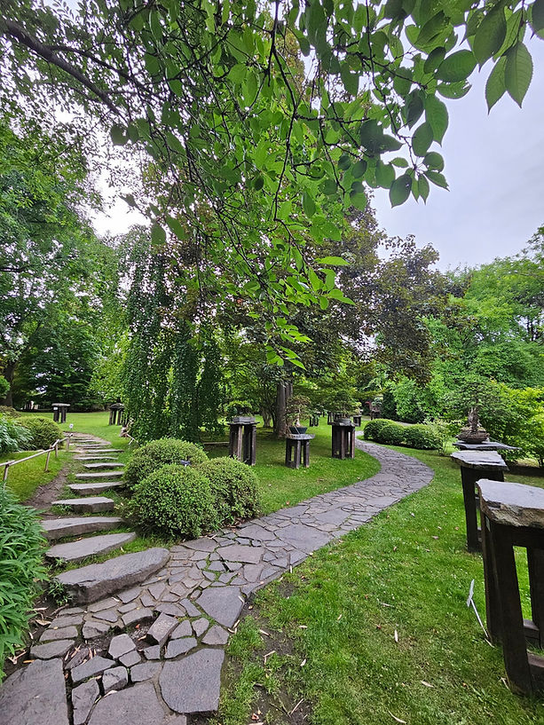
NÄ›kdy pĹ™icházĂ dny, kterĂ© nevĂme, jak unĂ©st. Nejsou krásnĂ©. Nejsou inspirativnĂ. Jen jsou.
A my – i kdyĹľ se snaĹľĂme – nevĂme, jak bĂ˝t.
Tenhle zápis vznikl z mĂsta, kde nebylo nic. Jen ticho. A bezmoc.
A pĹ™esto… vĂm, Ĺľe právÄ› tohle ticho nÄ›kdy slyšà nejvĂc ti, kteřà ho taky zaĹľili.
Možná právě Ty.
Po noci, kdy jsem vĹŻbec nespala, jsem celĂ© dopoledne odpadla vyÄŤerpánĂm.
Po probuzenà to ale nebylo lepšà – přišla obrovská beznaděj.
Nic z toho, co dělám, mi nedávalo smysl. Plakala jsem.
A pak jsem si řekla:
„A co kdyĹľ to, co pĂšu, má smysl aspoĹ pro jednoho ÄŤlovÄ›ka? Pro nÄ›koho, kdo si to právÄ› teÄŹ ÄŤte?“ A v tu chvĂli mi bylo o trochu lĂp. PĹ™estala jsem sama sobÄ› odporovat.
Večer jsem šla sama na koncert Maoka do botanické zahrady.
Nechtělo se mi. Ne mezi lidi.
Ale bylo to krásné.
PoprvĂ© jsem se cĂtila naplno sama se sebou. Jeho tĂłny a hlas byly pohlazenĂm pro duši.
I když pršelo, i když byla zima – nelituju, že jsem šla.
Večer jsem ještě chtěla něco sepsat, ale usnula jsem.
A poprvé po dlouhé době jsem spala až do rána.
Ráno pĹ™išlo balenĂ. A koneÄŤnÄ› jsem si aktivovala domĂ©nu na blog. MÄ›la jsem z toho radost – a zároveĹ pĹ™išla myšlenka: „ProÄŤ to vlastnÄ› dÄ›lám? Koho to bude zajĂmat?“ Volala jsem s účetnĂ a musela pĹ™iznat, Ĺľe to prostÄ› nedávám.
Všude kam jsem šla jsem viděla synchronicity.
Totálnà prázdnota. Jen jsem chodila. Nepřemýšlela.
Nebyl dĹŻvod nad ÄŤĂm pĹ™emýšlet. CĂtila jsem se slabá. Bez pevnĂ© pĹŻdy pod nohama. Bez plánĹŻ.
S nekoneÄŤnĂ˝m seznamem vÄ›cĂ, co se za mnou valà – a co ještÄ› musĂm dodÄ›lat. A bylo mi to jedno.
Natálka to asi vycĂtila.
„Proč jsi tak smutná, maminko?“ ptala se.
DÄ›ti cĂtĂ všechno. Láska vidĂ i to, co neĹ™ekneme nahlas.
Celý den i noc mě nechtěla pustit. Byla jako klÚtě.
V noci jsem se probudila a plakala. Tou nejistotou. TĂm, Ĺľe fakt nevĂm, kam to celĂ© vede.
Já – perfekcionistka, která mÄ›la vĹľdy vše naplánovanĂ© – nevĂm ani, co bude za hodinu. Ani zĂtra.
A přitom mi hořà úkoly do práce, které nejdou dál odkládat.
A tak si Ĺ™Ăkám – To si ÄŤlovÄ›k v dnešnĂm svÄ›tÄ› fakt nemĹŻĹľe dovolit bĂ˝t slabĂ˝?
Nemůže si dovolit „nebýt“? Ztratit se?
Já jsem si to tolik přála. NebĂ˝t vidÄ›t. UtĂ©ct od všeho. Tam, kde nic nemusĂm.
Kde nemusĂm nic dokazovat. Jen bĂ˝t.
Tak jednoduché… A přitom v dnešnà době skoro nemožné.
Nemohla jsem odjet ani od dětà – i když jsem chtěla.
Jejich neustálé mluvenà mě vyčerpávalo. Chtěla jsem jen ticho. Sama.
Odjet někam, kde mě nikdo nebude hledat.
A tak jsem nakonec alespoŠsepsala tyhle myšlenky. Když už nic…
Je 5 ráno. Naty se probudila a ležà tu se mnou na zemi jako malá kočička.
Možná se v tom někdo najde. Možná to někomu pomůže. A možná právě to mě teď držà nad vodou.
A tak to sdĂlĂm. I kdyby to nikdo neÄŤetl… MoĹľná je lepšà to ze sebe dostat, neĹľ se z toho zbláznit.
MoĹľná se taky nÄ›kdy cĂtĂš slabÄ›. VyÄŤerpanÄ›. ZtracenÄ›.
Ale právÄ› v tÄ›ch chvĂlĂch se rodĂ sĂla, která nenĂ hluÄŤná… ale pravdivá.
Nepotřebuješ být vždy silná. Stačà být opravdová.
A jestli dnes nemáš sĂlu pro svÄ›t – mÄ›j ji aspoĹ pro sebe.
Stačà jeden nádech. Jedna myšlenka. Jedno „jsem tady“.
A ono to pĹŻjde. Pomalu. Ale pĹŻjde.
Nádech a výdech
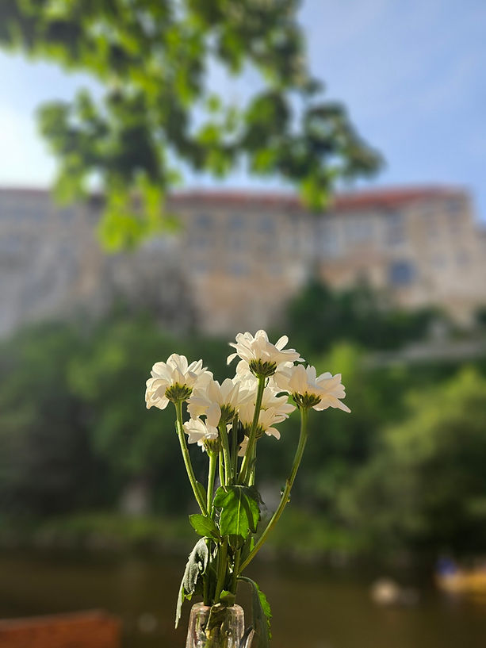
Den začal zvláštně.
S tĂhou na hrudi.
Se slzami v oÄŤĂch.
Jediné, co mě drželo, byla meditace a manifestace.
Jediné, co jsem dokázala, bylo jen být. Sedět, dýchat… a vydržet.
Ale nakonec – jako by se ve mně něco pohnulo.
Vydaly jsme se s Natálkou na procházku do města, na oběd, na kávu…
Jen spolu. Tady a teÄŹ.
ĹĂkala jsem si, Ĺľe je to poslednĂ den, kdy se takhle cĂtĂm.
Jakoby něco ve mně tušilo, že se to láme.
NevĂm proč… ale vÄ›dÄ›la jsem to.
V programu, ve kterém teď jsem, jsme měli za úkol udělat si radost – něco nad rámec běžného.
Něco, co bychom si jindy „nedovolili“.
A tak jsme vyrazily na nákupy.
A bylo to fakt fajn. Na chvĂli nic neĹ™ešit.
Ten den se zrodil malĂ˝ pĹ™ĂbÄ›h – u jednoho šperku, kterĂ˝ jsem si koupila.
Bylo to úplně kouzelné.
Znovu jsem si připomněla:
Když něco opravdu chceš, nepřemýšlej jak to přijde. Jen otevři prostor.
A ono to přijde.
Někdy úplně jinak, než bys čekala.
A přesně proto jsem se tomu musela zasmát.
Večer jsem si pustila dalšà Masterclass s mentorkou. Volalo si mě to.
Procházeli jsme energetickĂ˝m ÄŤištÄ›nĂm.
A já se dostala do zvláštnĂho stavu – jako bych mezi bdÄ›nĂm a spánkem nÄ›co uvidÄ›la.
Myslela jsem, že jsem usnula…
Ale najednou – přesně v ten moment, kdy přišel ten průlom – jsem otevřela oči.
A věděla jsem, že tohle nebyl sen.
Byla to vize. PotvrzenĂ. JemnĂ©, ale silnĂ© ANO od VesmĂru.
ZnamenĂ, Ĺľe jdu správnÄ›.
Hrozně zvláštnà pocit...
Den, kdy jsem se poprvé nadechla
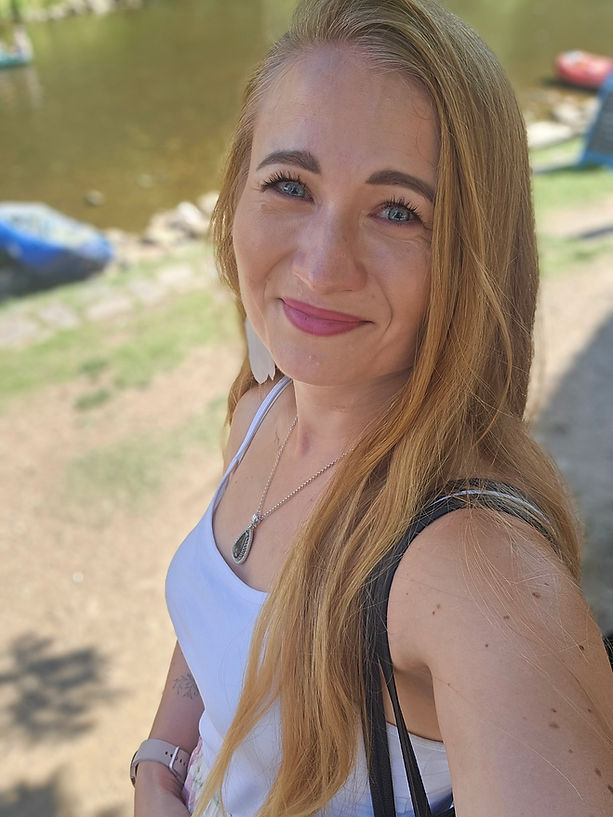
Energie se změnila. A já věděla, že je to pryč.
Bylo mi tak lehce, a pĹ™itom nevysvÄ›tlitelnÄ› dobĹ™e. CĂtila jsem, Ĺľe nÄ›co skonÄŤilo… a právÄ› teÄŹ zaÄŤĂná nová kapitola.
Integrace v plnĂ©m proudu – ještÄ› neuchopená, ale pĹ™esto pĹ™Ătomná.
Byla jsem mezi starým a novým.
A najednou jsem se poprvĂ© cĂtila jinak.
Ukotvená. V sobÄ›. V pĹ™ĂtomnĂ©m okamĹľiku.
TakovĂ˝ pocit jsem dosud neznala – byl zvláštnĂ a krásnĂ˝ zároveĹ.
Stála jsem venku u Ĺ™eky, dĂvala se na stromy…
a najednou mi tekly slzy štÄ›stĂ.
Slzy vděčnosti.
Že jsem to nevzdala.
Že jsem nezkolabovala.
Že jsem věřila dál v zázrak – a ten se stal dnes.
Nic uĹľ nenĂ jako dĹ™Ăv.
VnĂmánĂ. CĂtÄ›nĂ. MyšlenĂ.
Pohled na sebe. Pohled na druhé. Všechno je jinak.
Z perfekcionistky, která měla všechno pod kontrolou…
se stala žena, která se odevzdává proudu života.
Žena, která už nejedná hlavou, ale srdcem.
Která cĂtĂ vĂc neĹľ analyzuje.
Možná trochu šok.
Ale velká úleva.
Stále se to uÄŤĂm – pĹ™ipadám si jako dĂtÄ›, kterĂ© se teprve uÄŤĂ chodit.
Poprvé… se opravdu cĂtĂm jako nová já.
Ta, která se ještě včera rozpadala – a dnes dýchá.
Protože z toho všeho plyne jediné:
Láska je ta nejsilnÄ›jšà transformaÄŤnĂ sĂla, co existuje.
Na cestÄ›
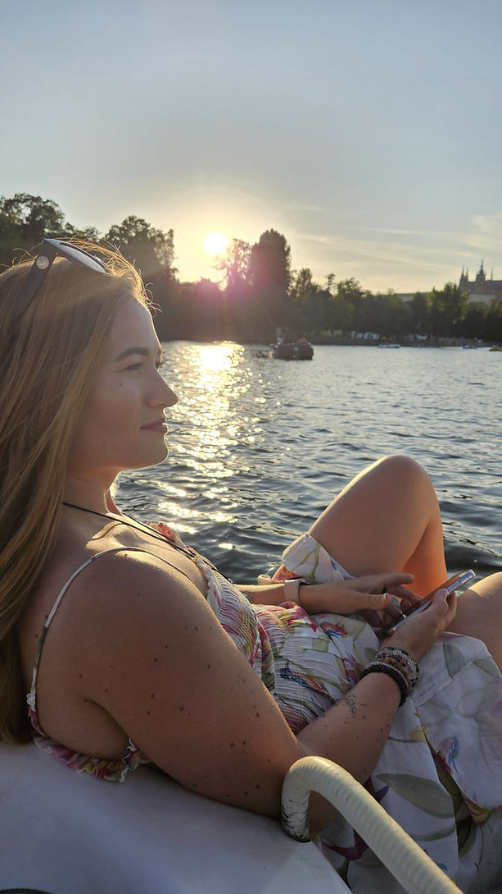
Bylo to zvláštnà ráno. Ne stejné, ale úplně jiné.
ÄŚekala mÄ› cesta do Prahy. Těšila jsem se – Ĺľe koneÄŤnÄ› budu sama, srovnám si myšlenky a bude lĂp.
PĹ™ed sebou nekoneÄŤnĂ˝ seznam ĂşkolĹŻ, kterĂ© mám udÄ›lat, a vĹŻbec jsem netušila, kde dĹ™Ăv zaÄŤĂt.
Měla jsem prostor. A plánovala si, jak všechno dám dohromady.
Jenže jakmile jsem vystoupila v Praze, začalo mi být zvláštně.
Ăšzkost. Tlak. Pocit, Ĺľe nevĂm, jak to všechno zvládnu.
Děje se toho tolik… a já mám prostě normálně fungovat?
Dojela jsem domů – a úplně to na mě padlo.
Plakala jsem. Hodně. A vůbec jsem nevěděla, co se sebou.
Neměla jsem komu zavolat. Nikdo mě nenapadal.
Nikdo, kdo by doopravdy chápal, co se ve mně děje.
Nahrála jsem aspoĹ vzkaz kolegyni… sdĂlela jsem s nĂ, co proĹľĂvám.
DoporuÄŤila mi: uzemnit se. Ledová sprcha, dobrĂ© jĂdlo, pĹ™Ăroda, pohyb.
ĹĂkala, Ĺľe je to nápor na nervovĂ˝ systĂ©m – tÄ›lo jede naplno a nestĂhá to všechno zpracovávat.
A měla pravdu.
CĂtila jsem se hroznÄ›.
Modlila jsem se, aĹĄ to skonÄŤĂ. PotĹ™ebuju pĹ™ece fungovat. NemĹŻĹľu bĂ˝t pořád takhle rozloĹľená…
PozdÄ›ji jsem šla ven. AlespoĹ na chvilku to bylo lepšĂ.
Dorazil mi totiž obraz se světelným kódem – právě dnes. Měla jsem provést aktivaci.
A od tĂ© chvĂle se vše mÄ›lo zaÄŤĂt mÄ›nit k lepšĂmu.
Věřila jsem. A čekala, že to tak bude.
Objednala jsem si něco dobrého – od rána jsem nic nejedla – a ulevilo se mi. Trochu.
Z úkolů jsem ale nezvládla nic.
A tak skončil den… s tolika plány, ale žádný z nich nevyřešený.
Ale možná… právě to byl ten nejdůležitějšà úkol dne.
ZĹŻstat. Necouvnout. NeutĂ©ct pĹ™ed tĂm, co se ve mnÄ› dÄ›je.
A dovolit si – aspoĹ na chvĂli – jen bĂ˝t.
Návrat k sobě
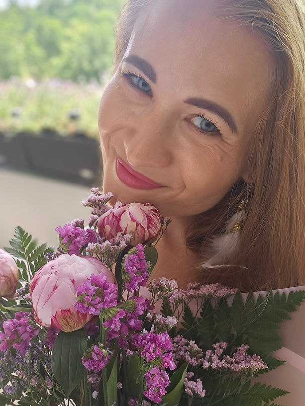
Zlom pĹ™išel mĂ˝m rozhodnutĂm udÄ›lat krok vpĹ™ed – i kdyĹľ byl jen malĂ˝.
NÄ›co se otoÄŤilo. Ne ve vnÄ›jšĂm svÄ›tÄ›, ale ve mnÄ›.
Bylo mi skvÄ›le jako nikdy pĹ™edtĂm.
KoneÄŤnÄ› jsem cĂtila, Ĺľe je to pryč… alespoĹ to nejhoršĂ.
Neuvěřitelný klid. Flow.
Štěstà bez důvodu.
Návrat k sobÄ› v plnĂ© sĂle – tentokrát ale jinak, neĹľ kdykoli dĹ™Ăv.
Byl to zvláštnà pocit. A přitom ne neznámý.
Jako návrat domů. Tam, kde jsem vždycky byla.
V práci jsem skončila zase v půl desáté večer. Ale nevadilo mi to.
Byla jsem na sebe pyšná, že jsem to zvládla.
MÄ›la jsem namĂĹ™eno domĹŻ, ale venku bylo tak teplo, Ĺľe jsem se šla projĂt.
Potřebovala jsem pohyb.
Neřešila jsem kam.
Jen jsem se nechala vést… a šla.
Byla jsem šťastná jako nikdy.
Vzduch voněl úplně jinak.
A vzpomněla jsem si na roky, kdy jsem ještě neměla děti – a přesto nikdy neměla čas.
Jak bláhové…
Nevěděla jsem, kam jdu.
A pak pĹ™išel impuls – zajĂt si do baru.
Jen tak. Sama.
A tak jsem šla.
Ani jsem netušila kam, ale asi mě to dovedlo přesně tam, kde jsem měla být.
Na mĂsto, kterĂ© mám ráda.
Dala jsem si drink – na oslavu nového života.
Jen tak. Sama se sebou.
A bylo to skvělé.
Bez oÄŤekávánĂ.
Bez pĹ™Ătomnosti nÄ›koho dalšĂho.
A přesto jsem si sama nepřišla.
DĹ™Ăv bych asi nešla. MÄ›la bych pĹ™edsudky.
Teď to bylo jiné. Nečekané.
A přitom přesně to, co jsem potřebovala.
ÄŚas sama se sebou. Se svou novou verzĂ.
Domů jsem dorazila kolem jedné.
Na chvĂli usnula.
Pak se probudila ve tři – a do šesti nemohla spát.
Tak jsem psala.
Nikdy dĹ™Ăv jsem tyhle stavy nemÄ›la.
Teď je to ale jiné.
UkotvenÄ›jšĂ. PravdivÄ›jšĂ. A hlavnÄ› – moje.
Návrat k sobě.
Po všech těch slzách, propadech, pochybách.
Ale s vĂrou tak silnou, jako nikdy pĹ™edtĂm.
Dát pĹ™ednost kvalitnĂm vztahĹŻm pĹ™ed kvantitou.
AutenticitÄ› namĂsto pĹ™etvářky.
Svobodě, ne závislosti.
ProtoĹľe jedinĂ©, na ÄŤem záleĹľĂ, je to, jak se s druhĂ˝mi cĂtĂte.
Ĺ˝e vás berou s respektem takovĂ, jacĂ opravdu jste.
Bez odsuzovánĂ. Bez masek.
A takových lidà je vážně málo.
A najednou jsem pochopila…
Ĺ˝e i ty nejsloĹľitÄ›jšà chvĂle mÄ› vedly sem.
Že každá slza, každý pád, každé ticho… mě přibližovalo k sobě.
A že možná právě proto to všechno stálo za to.
ProtoĹľe teÄŹ uĹľ vĂm, kdo jsem.
A nikdo mi to nemĹŻĹľe vzĂt.
Děkuju.
Děkuju.
Děkuju.